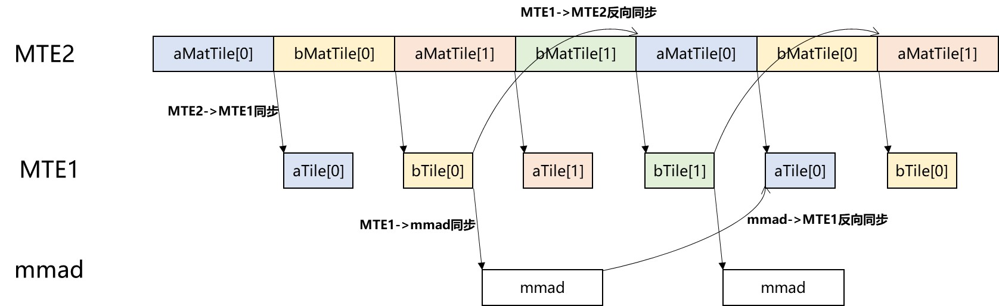

基础 GEMM 算子示例¶
概览¶
本示例展示如何使用 PTO 实现一个基础 GEMM 算子，并通过 torch_npu 将其暴露为 PyTorch 算子。
支持的 AI 处理器¶
- A2/A3
目录结构¶
demos/baseline/gemm_basic/
├── op_extension/ # Python 包入口（模块加载）
├── csrc/
│ ├── kernel/ # PTO kernel 实现
│ └── host/ # Host 侧 PyTorch 算子注册
├── test/ # 最小化 Python 测试
├── CMakeLists.txt # 构建配置
├── setup.py # Wheel 构建脚本
└── README.md # 本文档
算子说明¶
计算功能¶
本示例实现固定维度 [m, k, n] = [512, 2048, 1536] 的 GEMM：
\[
C = A \times B
\]
其中：
A形状：[512, 2048]（m × k）B形状：[2048, 1536]（k × n）C形状：[512, 1536]（m × n）
规格¶
| 项目 | 值 |
|---|---|
| OpType | gemm |
| 输入 | a: m×k, float16, ND; b: k×n, float16, DN |
| 输出 | c: m×n, float, ND |
| Kernel 名称 | gemm_basic_custom |
Tiling 参数¶
验证平台有 24 个核。本示例采用 4 × 6 分组方式将工作量切分到核上（优先切 m 与 n）：将 m 分为 4 份，n 分为 6 份，以充分利用 24 核。
每核形状：
singleCoreM = 128、singleCoreK = 2048、singleCoreN = 256
由于每核 tile 仍然超过 L0 容量，进一步将 k 按 64 的 base block 切分。base block 为：
baseM = 128、baseK = 64、baseN = 256
| 参数 | 值 |
|---|---|
m |
512 |
k |
2048 |
n |
1536 |
singleCoreM |
128 |
singleCoreK |
2048 |
singleCoreN |
256 |
baseM |
128 |
baseK |
64 |
baseN |
256 |
实现说明¶
类型定义¶
实现中定义了 GM、L1、L0 的矩阵表示，并为 tiles 绑定底层存储。示例（简化）：
using NDValidShapeA = TileShape2D<U, baseM, baseK>;
using NDsingleCoreShapeA = BaseShape2D<U, M, K>;
using GlobalDataSrcA = GlobalTensor<U, NDValidShapeA, NDsingleCoreShapeA>; // A in GM (ND)
using NDValidShapeB = TileShape2D<U, baseK, baseN, Layout::DN>;
using NDsingleCoreShapeB = BaseShape2D<U, K, N, Layout::DN>;
using GlobalDataSrcB = GlobalTensor<U, NDValidShapeB, NDsingleCoreShapeB, Layout::DN>; // B in GM (DN)
using NDValidShapeC = TileShape2D<T, baseM, baseN>;
using NDWholeShapeC = BaseShape2D<T, M, N>;
using GlobalDataOut = GlobalTensor<T, NDValidShapeC, NDWholeShapeC>; // C in GM
流水线调度¶
本示例通过在 L1 与 L0 使用双缓冲来重叠数据搬运与计算，以提高利用率。同步点用于确保依赖关系正确，包括：
- 正向同步：
MTE2 -> MTE1、MTE1 -> MMAD、MMAD -> FIXPIPE - 反向同步：
MTE1 -> MTE2、MMAD -> MTE1
流水线示意图：

构建与运行¶
1. 准备Python环境¶
创建python虚拟环境并安装需要的python包：
python -m venv virEnv
source virEnv/bin/activate
python3 -m pip install -r requirements.txt
2. 构建 wheel¶
配置 Ascend CANN 环境、 PTO Tile Lib 路径并构建 wheel：
export ASCEND_HOME_PATH=/usr/local/Ascend/
source ${ASCEND_INSTALL_PATH}/bin/setenv.bash
export PTO_LIB_PATH=[YOUR_PATH]/pto-isa
rm -rf build op_extension.egg-info
python3 setup.py bdist_wheel
3. 安装 wheel¶
pip install dist/*.whl
4. 运行测试¶
cd test
python3 test.py